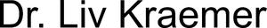

Trade Mark Journal No.2025/010 7 March 2025
WO0000001841106 (3,5,16,44)
Office of origin: Switzerland
Date of International Registration:18 November 2024
Date of designation in the UK:
18 November 2024

- Class 3
- Cosmetic products with complementary medical effect (cosmeceuticals); cosmetic products for skin care and treatment; cosmetic products for body and beauty care, cosmetic products and cosmetic preparations; soaps; perfumery products.
- Class 5
- Pharmaceutical products as well as preparations for health care; dietetic products for medical use; dermatological preparations; sanitary preparations for medical use; dietetic food and products for medical use, food supplements for humans; plasters, material for dressings; pharmaceutical products, vitamins; dietetic substances for medical use; mineral dietary supplements; food supplements; food supplements in the form of powdered beverage mixtures; vitamin preparations, particularly as food supplements and/or for medical purposes; vitamin preparations and substances; vitamin and mineral bars for medical use; vitamin and mineral food supplements; dietetic substances consisting of vitamins, minerals, amino acids and trace elements; dietetic substances consisting of vitamins, minerals and trace elements, singly or in combination; pharmaceutical products with complementary cosmetic effect (cosmeceuticals); nutritionally fortified beverages.
- Class 16
- Paper, cardboard and goods made of these materials, included in this class; printed matter; bookbinding material; photographs; stationery; adhesives for stationery or household purposes; artists' materials; paintbrushes; typewriters and office requisites (except furniture); instructional and teaching material (except apparatus); plastic packaging materials included in this class; printing type; printing blocks; printed matter; instructional and teaching material; plastic materials for packaging not included in other classes; books; periodicals.
- Class 44
- Cosmetic services; medical services; health and beauty care; health and beauty care; medical services; provision of information online via a global communication network on the use of personal care products and beauty products, cosmetic products, perfumery products; advice with respect to cosmetics; Beautician services; cosmetic face and body treatments; medical, therapeutic and other health care services; consulting services with respect to beauty care; consulting services with respect to beauty care; telemedicine services; dietitian services; beauty care services; beauty salon services; clinic services (ambulances); plastic and aesthetic surgery clinic services; medical and healthcare services relating to DNA, genetics and genetic testing; medical analysis services in connection with the treatment of persons; provision of online information regarding the prevention of cardiovascular diseases and strokes; consulting services regarding make-up; providing information about dietary supplements and nutrition; advice with respect to skin care; dermatological services for treating skin disorders; skin care salons; medical analysis and care services in connection with patient and customer treatment; medical diagnostic services (conducting tests and analyses); medical analysis for diagnosing and treating persons; personal care services for cosmetic purposes.
Swiss Lifestyle Holding AG
Representative: Wild Schnyder AG, Forchstrasse 30,, Postfach, CH-8032 Zürich, SWITZERLAND